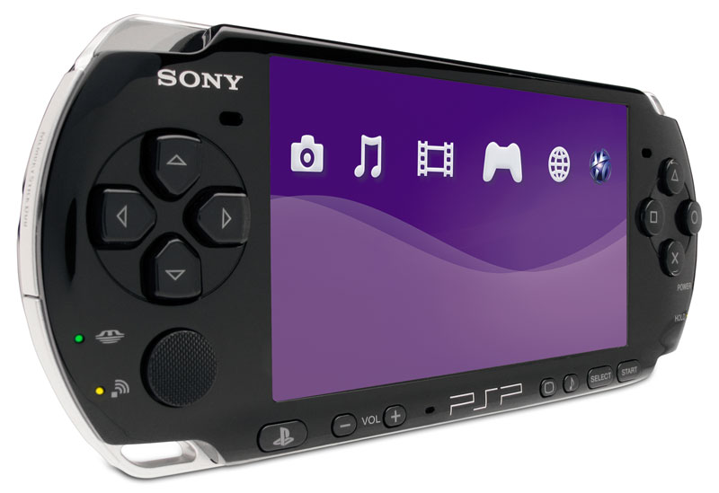
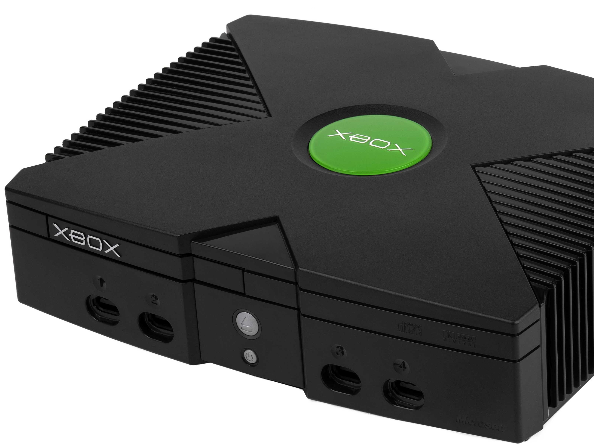

Console Emulators
This page describes console emulators.
Reasons To Use Console Emulators
- Doesn't have the same limitations as the original hardware
- Broader controller compatibility
- Timescale control
- Clearer video quality (upscaling, anti-aliasing, etc)
- Easier access to memory modifications (Gameshark, cheatcodes, etc)
- Homebrew game library
- Example List Item 1
- Example List Item 2
- Example List Item 3
Table of Best All-In-One Console Emulators
| Name of Emulator | LAME | SWEET |
| Retroarch | Frontend for emulators, game engines, and media players | https://www.retroarch.com/ |
| OpenEmu | Mac based all-in-one emulator | https://openemu.org/ |
| MAME | Multiple Arcade Machine Emulator | https://www.mamedev.org/ |
Best Modded Consoles To Play Emulators On
PSP
- PSP: Can emulate the following systems: Atari,Commodore 64,GB/GBC/GBA,N64,NES,NeoGeo,NeoGeoCD,SNES,Sega Genesis 
- Xbox: Can emulate the following systems: Amstrad CPC,AppleII,Atari (2600,ColecoVision,GB/GBC/GBA,Intellivision,Jaguar),Lynx,MAME,NES,SNES,ScummVM,Sega Game Gear,Sega Genesis,Sega Master System,Sega SG-1000,Sony PS1,Spectrum,TurboGrafx-16,WonderSwan,x86 (PC) 
- Wii: Can emulate the following systems: Amstrad CPC, Apple IIe, Arcade Games, Atari 2600, Atari 7800, Atari 800/XL/XE/5200, Atari Lynx, Atari ST, Atari ST(e)/Mega/Falcon, Chip8, ColecoVision, Commodore 64, Commodore Amiga, Dos, GB/GBC/GBA, Intellivision, MSX, NEC PC-8801, NEC PC-9801, Neo Geo emulator, Neo-Geo CD, Neo-Geo Pocket, Nintendo 64, Nintendo DS(L), NES, Odyssey2/Videopac, PC-9801, Playstation 1, Sega Master System and Game Gear, Sega Saturn, Sinclair ZX Spectrum, Super Nintendo, Trojan LCD Game Simulator, Turbo Grafix 16/PC Engine, VCS/2600, Vectrex, Virtual Boy, VG5000

Stats Of This Page
Sources
- https://www.merriam-webster.com/dictionary/emulator
- https://en.wikipedia.org/wiki/Emulator
- https://kaluszka.com/vt/emulation/history.html
- https://www.zophar.net/articles/art_14-1.html
- https://www.zophar.net/articles/art_14-2.html
- https://www.zophar.net/articles/art_14-3.html
- https://emulation-general.fandom.com/wiki/History_of_emulation
Webmaster Contact
Samuel Banya
New York, NY
Samuel Banya
New York, NY